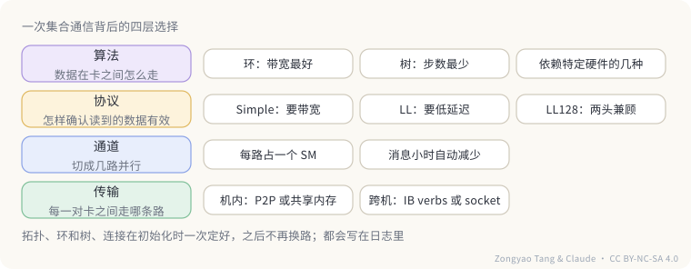
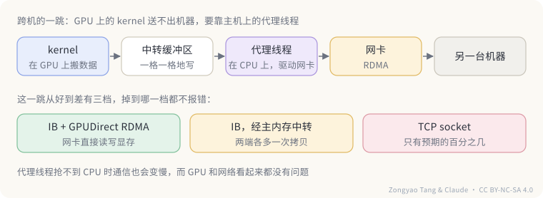

线索是：大部分工作在初始化时就做完了 → 每次操作被切成几路“通道”并行执行 → 数据在通道里以哪种方式交接，有三种协议可选 → 几张卡之间按什么图形传递，有环和树两种算法 → 最底下，数据经由哪种传输方式离开这张卡。这五层从上到下一一对应着 NCCL 日志里的信息和源码的目录，读懂了这一单元，6.3 的排查就有了依据。
第 6 部分 · 集合通信与 NCCL6.2 NCCL 内部：拓扑、通道与协议
这一单元回答调用一次 all-reduce，NCCL 在里面做了什么？
承接 6.1（集合通信是什么）和第 5 部分（链路）：这一单元看 NCCL 怎样把一次集合通信安排到具体的链路上。
- 大部分工作在初始化时一次做完：探测拓扑、建环和树、连好每一对卡
- 通道：把一次操作切成几路并行，每一路占用 GPU 的一个计算单元
- 三种协议：Simple 要带宽，LL 要低延迟，LL128 两头兼顾
- 算法决定数据在卡之间的走法：环的带宽最好，树的步数最少
- 传输层：机内走 P2P 或共享内存，跨机走 IB verbs 或 socket
讲解
1大部分工作在初始化时一次做完：探测拓扑、建环和树、连好每一对卡
创建通信器（communicator）时，NCCL 先摸清这台机器的硬件拓扑，再和其他进程交换信息，据此为所有卡建好环形和树形两种通信图，并把图上相邻的每一对卡连接好。之后每一次集合通信都重复使用这些图和连接。

这一单元后面四节各讲一层 通信器是 NCCL 里“一组要互相通信的 GPU”的句柄。每张卡在其中有一个编号（rank），从 0 到 N−1。PyTorch 在多卡训练启动时为你创建它。创建的过程大致分四步。
一、带外握手（bootstrap）。 各个进程先通过一条普通的 TCP 连接找到彼此，交换各自的信息。这条连接只用来建立通信器，不传训练数据。它走哪个网络接口，由
NCCL_SOCKET_IFNAME决定。二、探测拓扑。 每个进程读系统的
/sys目录，弄清本机的 PCIe 树：有哪些 GPU 和网卡，它们各在哪个交换芯片、哪个 CPU 插槽下，GPU 之间有没有 NVLink，各条链路多宽。这就是 5.1 讲的那张“距离”图，NCCL 把它建成了一个内部的数据结构。三、建图。 根据拓扑，为所有卡排出通信的顺序：
- 环：每张卡记住自己的上家和下家。排的时候尽量让机内相邻的卡走 NVLink，让跨机的那几跳落在合适的网卡上。
- 树：每张卡记住自己的父节点和子节点。NCCL 用两棵互补的二叉树：一棵树里的中间节点，在另一棵树里是叶子，这样每张卡的收发负担是均衡的。
这些图在初始化时建好，之后所有的集合通信都复用。
四、建连接。 对图上每一对相邻的卡，选一种传输方式并建立连接：机内的映射对方的显存，跨机的注册内存、建立 QP（5.2 讲的那些慢操作）。
为什么排查要先看这里。 因为“走哪条路”是在这个阶段定下来的。训练过程中 NCCL 不会再换路。如果它在初始化时选了 TCP 而不是 InfiniBand，或者选了一块不该用的网卡，后面每一步通信都会慢，而且不会再有任何提示。好在这些选择都会打印在日志里（6.3）。
还可以让 NCCL 把它探测到的拓扑写出来看：设置
NCCL_TOPO_DUMP_FILE为一个文件路径，初始化后会得到一份 XML。在容器或虚拟机里怀疑 NCCL “看错了”硬件时，这份文件是直接的证据。打个比方像一场接力赛：赛前排好棒次、每个人认准下一棒是谁、试跑确认交接没问题。发令枪响之后，只管跑和交棒，不再商量。
所以多机训练启动慢、启动时卡住或报错，问题几乎都在这个阶段；而它在这个阶段做出的选择（用哪张网卡、哪种传输），会一直影响到训练结束。
- 连接建好了。现在来了一次 all-reduce 的调用，NCCL 首先要决定：用多少“人手”来搬。
2通道：把一次操作切成几路并行，每一路占用 GPU 的一个计算单元
搬数据、做加法的是 GPU 上的 kernel。只用一个计算单元（SM）来做，既喂不满 NVLink 或网卡，也浪费了其他计算单元。所以 NCCL 把每次操作的数据切成几份，每份交给一个“通道”；每个通道是 kernel 里的一个 block，各占一个 SM，并行工作。
为什么要并行。 集合通信在 GPU 上是一个 kernel：从发送缓冲区读数据，必要时和本地数据相加，写到接收缓冲区或中转缓冲区。这是纯粹的搬运和逐元素运算，受带宽限制。一个 SM 能驱动的带宽是有限的，远小于一组 NVLink 或一块高速网卡的带宽。
通道是什么。 每个通道负责输入数据的一段连续区域，互不重叠。在 CUDA 的层次上（3.2 讲过 grid 和 block）：
- NCCL 的 kernel 启动时，grid 的大小就是通道数。
- 每个 block 对应一个通道，跑在一个 SM 上。
- block 内部按 warp 分工：头两个 warp 负责把这次操作需要的信息装进共享内存，其余的 warp 负责搬数据和做运算。
每个通道还各有一份自己的环或树，所以不同的通道可以走不同的链路。在一台有多块网卡的机器上，各个通道可以从不同的网卡出去，把几块网卡都用上。
通道里的数据怎么流。 每个通道有一块固定大小的中转缓冲区（Simple 协议下默认 4 MiB），分成 8 格。数据一块一块地流过这些格子：有的格子正在被 kernel 写入，有的在等网卡发走，有的正在网络上，有的已经可以被对端读取。这样发送、传输、接收是流水线式重叠进行的，而不是“整批发完再处理下一批”。这是 0.1 里“用别的活把等待填满”在通信内部的样子。
通道数的权衡。
- 太少：GPU 这一侧成为瓶颈，链路喂不满。
- 太多：每个通道分到的数据块变小。跨机传输时，如果每次交给网卡的块小于中转缓冲区的一格（512 KiB），网卡就在发一个个没装满的块，传输效率下降。所以消息小的时候，NCCL 会主动减少通道数。
- 还有一个容易忽略的代价：通道占用的 SM 是从训练的计算那里拿走的。通信和计算重叠进行时（7.1），它们在抢同一批 SM。
NCCL 在初始化时按拓扑建好一批通道，每次操作再根据消息大小和所选的算法、协议决定实际用几个。这些都由它内部的调优模型决定，官方不建议手动设置。
打个比方像搬家时一条传送带不够快，就并排开几条，每条负责一部分箱子。但传送带不是越多越好：箱子太少时，每条带上稀稀拉拉，反而不划算。
所以通道数是一个权衡：多了，GPU 这一侧并行度高、能同时用上多块网卡；但每个通道分到的数据变少，网络传输的效率下降，还要从训练的计算那里抢走更多的 SM。
出处Demystifying NCCL 第 2 页 通信通道Demystifying NCCL 第 7 页 通道缓冲区与数据划分Demystifying NCCL 第 8 页 通道到 CUDA 层次的映射- 数据切好了，要在卡与卡之间一跳一跳地传。每一跳怎样交接，NCCL 准备了三种方式。
3三种协议：Simple 要带宽，LL 要低延迟，LL128 两头兼顾
数据从一张卡交到下一张卡时，接收方怎么知道“这一块已经写完，可以读了”？这个交接方式就是协议。Simple 用大块数据加较重的同步，带宽最高但每一跳的延迟大；LL 把每 4 个字节的数据和一个标志一起写，延迟最低但带宽只有一小半；LL128 以 128 字节为单位，接近满带宽，延迟也低，但对硬件有要求。
三种协议要解决的是同一个问题：发送方往一块共享的缓冲区里写数据，接收方怎样确定自己读到的是完整、有效的数据。
Simple：为带宽而设计。 数据按大块（默认每块 512 KiB）写入。写完一整块后，用内存屏障保证这块数据对接收方可见，再更新一个计数告诉对方“又有一块好了”。接收方必须等一整块到齐才能读。同步的动作比较重，但摊到 512 KiB 上微不足道，所以带宽接近链路的上限。对很小的消息，这个同步的代价就占了主要部分：论文给出的每一跳延迟约 6 微秒。
LL（low latency）：为延迟而设计。 每次写 8 个字节：4 字节数据，加 4 字节标志。这 8 个字节是一次原子写入，接收方只要看到标志变成预期的值，就知道旁边的 4 字节数据是有效的，不需要别的同步。每一跳约 1 微秒。代价有两个：一半的空间给了标志；而且为了让主机上的线程能轮询标志，中转缓冲区必须放在主内存里，这就用不了 GPUDirect RDMA。所以它的带宽只有峰值的四分之一到一半。
LL128：兼顾。 思路和 LL 相同，但单位是 128 字节：120 字节数据加 8 字节标志，带宽能到峰值的 95% 左右，每一跳约 2 微秒。它要求这 128 字节的写入不会被拆开或打乱顺序，NVLink 能保证这一点，其他一些路径不能。所以 NCCL 只在确认硬件支持时才启用它，否则会有数据损坏的风险。
Simple LL LL128 目标 高带宽 低延迟 低延迟且高带宽 每次写入 大块数据 4 字节数据 + 4 字节标志 120 字节数据 + 8 字节标志 带宽 接近峰值 峰值的 25%–50% 约峰值的 95% 每跳延迟 约 6 微秒 约 1 微秒 约 2 微秒 （数字来自 Demystifying NCCL 的表 1，是论文作者引用和测量的量级，不同硬件会有出入。）
这正是 6.1 那个时间公式的两项。 小消息的时间由“固定延迟 × 步数”决定，所以选延迟最低的协议；大消息由“数据量 ÷ 带宽”决定，所以选带宽最高的协议。
可以用环境变量
NCCL_PROTO指定或排除某种协议。官方文档的态度很明确：不建议设置，只在怀疑某种协议有 bug 时用来排除它。打个比方像交接货物：Simple 是装满一整车再签收，单趟手续重，但运量大；LL 是每件小货都附一张签收条，随到随签，快但装不了多少；LL128 是一箱一签，介于两者之间。
所以小消息用 LL 或 LL128，大消息用 Simple，NCCL 会按消息大小自动切换。同一个训练里，不同大小的张量可能走的是不同的协议。
- 协议管的是“一跳”。几张卡之间总共要怎么传，是另一个层面的选择。
4算法决定数据在卡之间的走法：环的带宽最好，树的步数最少
同一个 all-reduce，可以让数据沿着环一站一站传，也可以沿着树先向上汇总、再向下分发。环让每条链路都满负荷，带宽利用最好，但步数随卡数线性增长；树的步数只随卡数的对数增长，适合消息小、卡多的情况。算法和上一节的协议是两个独立的选择，可以任意搭配。
环。 就是 6.1 讲的算法：N 张卡排成环，all-reduce 要 2(N−1) 步。它的好处是每张卡只和上下家通信，环上每条链路的负载完全相同，大消息时带宽利用率最高。弱点是步数：卡数翻倍，步数也翻倍，每一步的延迟累加起来。
树。 数据先从叶子向根逐级汇总，根得到总和后再逐级向下分发。步数大约是树的深度的两倍，也就是和 log N 成正比。1024 张卡，环要两千多步，树只要二十步左右。
普通的树有一个缺点：叶子节点只发不转，中间节点既收又发，负担不均，带宽浪费了一半。NCCL 用的是双二叉树：同时建两棵树，让一棵树里的中间节点在另一棵树里当叶子，各传一半的数据。这样每张卡的收发总量是均衡的，带宽利用也接近环。
还有几种依赖特定硬件的算法，知道名字、在日志里认得出就够了：
- NVLS：利用 NVSwitch 芯片自身的能力在机内做合并。
- CollNet：让支持这项功能的 InfiniBand 交换机参与合并。
- PAT：较新版本加入的一种树形算法。
算法和协议的关系。 它们是正交的：算法决定“谁发给谁、按什么顺序”，协议决定“每一跳怎么交接”。环和树都可以配 Simple、LL、LL128 中的任何一种。一次操作实际用的是一个“算法 + 协议”的组合。
怎么选。 NCCL 内部有一个调优模型：对每种可用的组合，根据卡数、消息大小、探测到的链路带宽和延迟，估算这次操作的耗时，选最小的。同时决定用几个通道。大致的规律是：
- 消息小：树，配低延迟的协议。
- 消息大：环，配 Simple。
- 卡数很多时，“大”的门槛会提高，因为环的步数代价更大了。
可以用
NCCL_ALGO强制指定算法。它的正当用途是诊断：比如怀疑某种算法在你的网络上表现异常，强制换一种对比一下。平台上长期存在的特殊情况，官方推荐写一个调优插件来修正模型的选择，而不是把环境变量固定在脚本里。Meta 的论文里就提到，他们针对自己的网络调整了这个选择，比如在更大的消息上仍然使用树。打个比方像通知全公司一件事：一个传一个（环），每个人只用说一次，但传完要很久；按组织架构逐级传达（树），几层就到了所有人。
所以 NCCL 每次操作都要回答两个问题：走什么图形（算法），每一跳怎么交接（协议）。它内部有一个模型，按卡数、消息大小和链路情况估算每种组合的耗时，选最快的。
出处Demystifying NCCL 第 3 页 环与双二叉树Demystifying NCCL 第 6 页 表 3 各操作支持的算法与协议NVIDIA 博客：Understanding NCCL Tuning- 最后一层：数据真正离开这张卡的方式。前面第 5 部分讲的所有硬件，在这里和 NCCL 接上了。
5传输层：机内走 P2P 或共享内存，跨机走 IB verbs 或 socket
图上相邻的两张卡之间，数据实际怎么过去，由传输层决定。同一台机器内，优先让一张卡直接写另一张卡的显存（P2P，走 NVLink 或 PCIe），不行就经主内存里的共享内存中转。跨机器时，有 RDMA 网卡就用 IB verbs，否则退回普通的 TCP socket。
机内。
- P2P：一张卡的 kernel 直接把数据写到另一张卡的显存里，不经过 CPU。有 NVLink 就走 NVLink，没有就走 PCIe。如果两张卡属于同一个进程，NCCL 还能省掉中转缓冲区，直接从源缓冲区写到目的缓冲区。
- SHM（共享内存）：经主内存里的一块共享内存中转。当 P2P 不可用，或者 P2P 反而更差时使用。后一种情况的例子：两张卡分属两个 CPU 插槽、只能通过 PCIe 互通，这时设备间直传的流量 CPU 处理得并不好，经主内存反而顺畅。
跨机。 这时 GPU 上的 kernel 不能直接把数据送到另一台机器，需要主机上的一个代理线程（proxy）来驱动网卡。分工是：
- kernel：把数据写进中转缓冲区的一格，更新计数。
- 代理线程：发现有一格写好了，就填一张 RDMA 的工作请求交给网卡（5.2 里的
ibv_post_send），然后轮询完成队列。 - 对端的代理线程：发现数据到了，更新计数，通知对端的 kernel 来读。
跨机的传输方式有两种：
- NET/IB：用 verbs，InfiniBand 和 RoCE 都走它。中转缓冲区放在哪，取决于能不能用 GPUDirect RDMA（5.2）：能用，缓冲区就在显存里，网卡直接读写；不能用，缓冲区在主内存里，两端各多一次显存和主内存之间的拷贝。
- NET/Socket：普通的 TCP。数据要先拷到主内存，再经过内核的网络栈（0.3 讲过它的开销）。这是没有 RDMA 可用时的退路，慢得多。
收发双方每次传输前都要先“会合”：接收方准备好缓冲区并告知发送方，发送方才开始发。这就是 5.2 和 5.3 提到的“可以发了”那条消息。
代理线程值得留意。 它是一个跑在 CPU 上的普通线程，要不停地轮询。它如果被调度到了离网卡很远的核上（5.1 的 NUMA），或者 CPU 被数据加载的进程占满了，跨机通信就会变慢，而 GPU 和网络看起来都没有问题。这是“通信慢，但原因在 CPU”的一类情况。
降级是静默的。 把上面的选择串起来，跨机的一跳从好到差有三档：IB 加 GPUDirect RDMA、IB 经主内存中转、TCP socket。掉到哪一档完全取决于初始化时的条件是否满足。NCCL 不会因为“没用上最好的”而报错，它只会在日志里如实写出自己用了什么。

跨机一跳的分工，和它可能落到的三档 源码导读：从 ncclAllReduce 到通道上的 kernel
目的不是读懂每一行，而是知道 NCCL 仓库里每个目录管什么，遇到问题时能找到该看的文件。下面的文件名来自 Demystifying NCCL 对 2.19 版的分析和仓库的目录结构，新版本可能有调整，以你手头的版本为准。
一次 all-reduce 的调用链，从上到下：
src/collectives.cc：对外的接口。ncclAllReduce在这里，它只是把参数打包成一个任务描述。src/enqueue.cc：调度的核心。在这里为这次操作选算法和协议、决定用几个通道、计算每块数据的大小，然后启动 kernel。6.2 讲的“每次操作都要做的选择”都发生在这个文件里。src/graph/tuning.cc：调优模型。各种“算法 + 协议”组合的带宽和延迟估算在这里。想知道 NCCL 为什么选了某个组合，看这里。src/device/：在 GPU 上运行的代码。all_reduce.h等文件里是每种操作、每种算法的步骤（6.1 里那串recvReduceSend）；prims_simple.h、prims_ll.h、prims_ll128.h是三种协议各自对这些步骤的实现。
初始化相关：
src/init.cc：创建通信器的主流程。src/bootstrap.cc：带外握手。src/graph/topo.cc：探测硬件拓扑。rings.cc、trees.cc、connect.cc：建环、建树、把图连起来。
传输层：
src/transport/p2p.cc、shm.cc：机内的两种传输。src/transport/net.cc：跨机传输的通用部分；net_ib.cc是 verbs 的实现，net_socket.cc是 TCP 的实现。src/proxy.cc：代理线程。
怎么用这张地图。 举三个例子：
- 日志里某条
NCCL WARN带着文件名和行号（比如来自net_ib.cc），你立刻知道它出在 verbs 这一层，回到 5.2 的骨架去对是哪一步失败了。 - 想知道 GPUDirect RDMA 的启用条件到底是怎么判断的，去
net_ib.cc和graph/里搜GDR。 - 想知道某个环境变量实际影响什么，在仓库里搜它的名字（去掉
NCCL_前缀也搜一下），通常能直接找到读取它的那一处。
写到这里要说明一点：这份导读是依据论文和文档写的，没有逐行对照具体的 NCCL 版本，读的时候以你手上的版本为准。
打个比方像寄东西：同一栋楼直接送过去；同城走专线快递；实在没有专线，才用普通邮政，慢得多。
所以同一个 all-reduce，因为底下走的传输不同，速度可以差几十倍。而选哪一种是 NCCL 在初始化时根据硬件自动决定的：条件不满足时它会悄悄降级，不会报错。
串起来
NCCL 在初始化时探测拓扑、建好环和树、连好每一对卡。之后每次操作：先选算法（环或树，决定数据在卡之间的走法）和协议（Simple、LL、LL128，决定带宽和延迟的取舍），再把数据切给若干通道并行处理，每个通道经由传输层（机内 P2P 或共享内存，跨机 IB verbs 或 socket）把数据送出去。
考考自己
不看讲解，用自己的话讲一遍。
- NCCL 在创建通信器时做了哪些事？为什么说排查通信问题要先看初始化？
- NCCL 的“通道”是什么？通道数多和少各有什么代价？
- NCCL 的 Simple、LL、LL128 三种协议各自的特点是什么？分别适合什么场景？
- NCCL 的环形和树形算法各有什么优劣？“算法”和“协议”是什么关系？
- NCCL 在机内和跨机分别有哪些传输方式？跨机传输时，主机上的“代理线程”起什么作用？
术语
- communicator
- 通信器
- channel
- 通道
- proxy thread
- 代理线程
- double binary tree
- 双二叉树
- rendezvous
- 会合（收发双方先协调再传输）